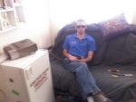
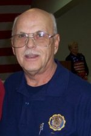
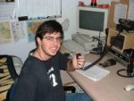
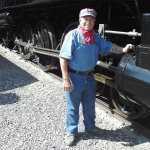
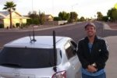
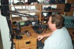
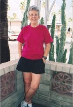
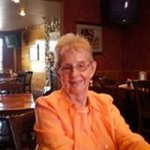
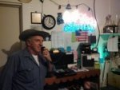
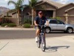

The photo archive / 2014
Putting a face to the voice.
Nineteen photographs recovered from the early 2100 Net gallery, with the original call-sign captions.
Historical photographs and labels from the June 29, 2014 capture. These do not indicate current membership, current call signs, or operator assignments. Images are shown at their recovered resolution.


























Source: original “Face to the Voice” gallery. Photographer credits were not specified on the recovered page. Four member thumbnails could not be recovered: N7BBS, W7ADO, W1VBG/W7YKU and WX7JEM. Corrections and removal guidance.